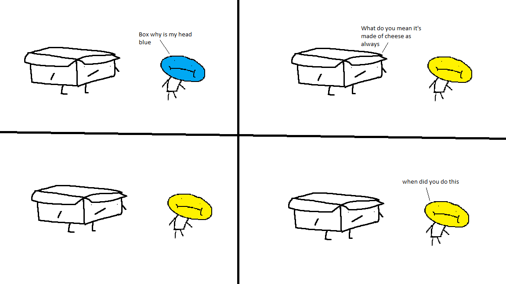
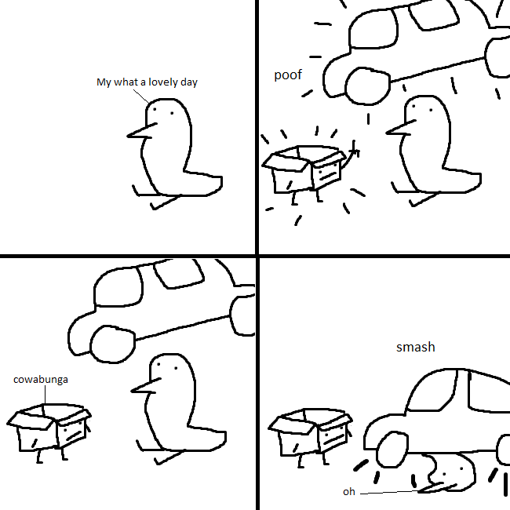
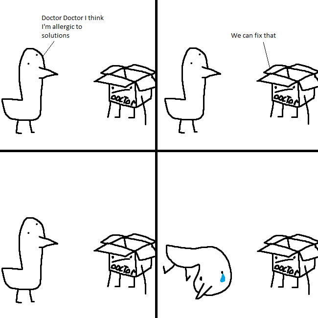
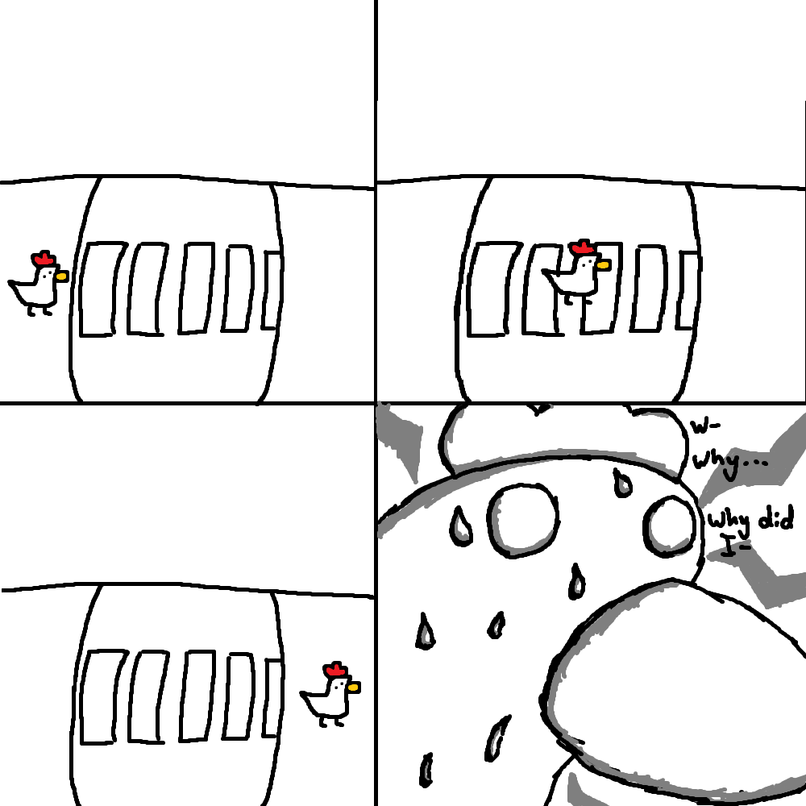

Hay was the first digital comic series I made. It came from me being a child and watching the Jonochrome developer commentaries about One Night at Flumpty's, where the characters (mainly a god egg guy) were from a comic he made with his friends. I wanted to make a comic like that so I stole the idea of a god character and made this. I made all the comics in MS Paint because Jonochrome also did that, but also because I could make them easily. This worked, if I ever had an idea or was suggested an idea I could make it in no time, for better or for worse but I think most of these jokes fucking suck. I think Hay has ended now, but if I ever get a funny idea for a comic I might add a new one? I don't know. I think Hay's dead in the dirt.
This was the first one. I literally stole the whole joke from the Flumpty's comic, except in that one it was about wearing boots instead of having a head made of cheese. I hate this one.
Props to me, this was an original joke, and also features the bird character that I would basically replace the cheese head guy from the first comic for the rest of the series cos I liked his design more. I still do. Unfortunately there isn't an actual joke here but it's one of the better comics, still.
I think this is my favourite one cos it's a joke I actually made myself. I like how I drew the box guy in this one.

BONUS COMIC!!! This is what the third Hay comic was going to be but, if I recall, I wanted to make a funnier joke so I made the Hay 3 you see above this one. I liked the sausage guy, I don't remember him at all. I also dropped the colouring. I don't remember what the joke was supposed to be here so it looks a bit psychopathic but hey ho. Perhaps in its unfinished state this is the best Hay comic yet?

This one came from me talking with flines again, we were just talking about stupid ideas for Hey. This is my least favourite one because it's SO RANDOM XD!!!! humor.
This is my second favourite one because I came up with the joke myself again, I still prefer 3 more because I like the characters more.

The guy in this one is the cheese head guy again, just so you know. We were talking about Hay and my bud Craity suggested a comic about ingesting plutonium so I made this, I suppose this is a fitting end to the series because he dies. Not for real though. He's a god, remember?
back